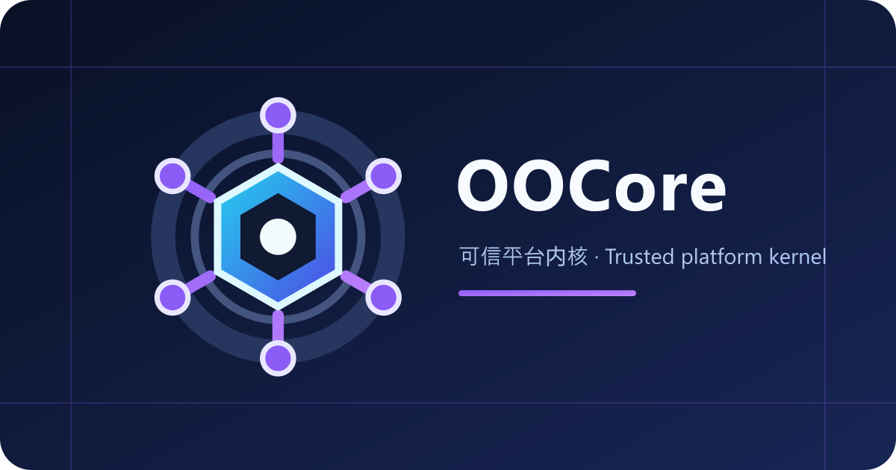

OOCore¶

OOCore 在产品、Wiki 和 OOConsole metadata 中归入基础（Core）。该分类不创建聚合插件、runtime、Maven group、package、数据库或额外硬依赖；OOCore 仍是独立版本和仓库的平台前置。
OOCore 是 OO 系列服务端插件的独立平台内核，也是 Minecraft/Paper/Folia 兼容防火墙。它不负责窗口或渲染，而是让 OOEngine、OOChat、OOGame、OOMusic 等插件面对稳定 API 编程；服务端版本变化原则上只需更新 OOCore provider。
它解决什么问题¶
- 模块发现、依赖图、注册握手、启停顺序和依赖逆序关闭；
- ABI、handshake、Capability negotiation 与 typed service registry；
- Paper/Folia global、async、region、entity scheduler 语义；
- Component、registry/key、player/entity/item、data component 和 plugin channel facade；
- 服务器 UID、平台存储、健康诊断和兼容矩阵；
- Minecraft 版本探测、单一 adapter/provider 选择与 unsupported fail-fast；
- owner-bound 资源释放，避免 task、listener、channel、service 和 session 泄漏。
OOCore 明确不拥有 UI、窗口、RenderPlan、资源表现、编辑器、客户端 renderer 或表现层协议。这些属于 OOEngine。raw packet 是独立可选 Capability，稳定 Paper adapter 默认不提供。
版本策略¶
OOCore 使用独立 SemVer，不和 OOEngine 绑定版本号。
| 项目 | 当前稳定契约 |
|---|---|
| Stable | 1.7.1 |
| Withdrawn | 1.7.0（invalid candidate；禁止安装或依赖） |
| ABI | 1 |
| Handshake | 1 |
| Java | 25 |
| 兼容目标 | Minecraft/Paper/Folia 26.1、26.1.2、26.2 |
1.7.1 是当前公开稳定版，1.7.0 已撤回且不可使用。OOCore 是运行时硬依赖，但兼容性按 ABI、handshake 与 Capability 协商，不要求精确 SemVer 相等。
oocore.command-contribution.v2 已 implemented/published。Actor 使用 host-minted Bukkit-neutral identity，提供 SenderKind、真实玩家 Optional<UUID>、bounded displayName 与 invocation-scoped controlled Authorization；不暴露 CommandSender/Player，不允许 command dispatch。v1 保持 binary compatible，并标记 deprecated migration。
oocore.owner-bound-service.v1 已 implemented/published，用于 Core 验证的 owner-bound typed service acquisition。它绑定 provider/requester 双生命周期，lease 关闭后泄漏的 service 引用也会 fail-fast；不信任字符串 ownerId，不暴露 session 或 Bukkit handle。旧 registry ABI 继续保留。
配置 / Configuration¶
OOCore 当前没有用户可编辑的 runtime config.yml。storage/*.data 与 server.uid 是 managed state，禁止手工修改；gradle.properties 仅用于开发构建，不是服务器配置。
OOCore currently has no user-editable runtime config.yml. storage/*.data and server.uid are managed state and must not be edited manually. gradle.properties is build metadata only.
联系 / Contact¶
- 作者 / Author: zkonikishi
- QQ: 276098266
- Discord: https://discord.gg/KPq2fZHFK
- ifdian
- QQ群 / QQ Group: 1063369777
1.2.x 保持现有 API 二进制兼容。新增兼容方法优先使用 additive interface/default method；破坏性契约变更才提升 ABI/major。Minecraft 兼容修复可独立发布 OOCore patch/minor。
Platform Capability¶
oocore.scheduler.region.v1
oocore.component.v1
oocore.registry-key.v1
oocore.player-entity-item.v1
oocore.data-component.v1
oocore.plugin-channel.v1
oocore.raw-packet.v1 # optional，StablePaper 默认 false
消费者必须逐项 require 实际使用的 Capability，不能只用 PLATFORM umbrella 假定所有能力都存在。
生命周期与泄漏防护¶
OOModuleSession 是模块所有资源的 owner。注册得到的 listener、service、channel、OOEngine scope 和 scheduler handle 都应交给 session.own(...)。
OOScheduler 提供生命周期安全的 owned cancellation：
globalOwned(...)asyncOwned(...)entityOwned(...)
这些方法返回幂等 OORegistration，可由 OOModuleSession.own(...) 统一关闭。模块 disable 后不得继续接受 callback 或注册新资源。
当前边界限制：
| 资源 | 上限/规则 |
|---|---|
| 模块 | 256 |
| typed service | 4096 |
| lifecycle scope owned resources | 4096 |
| shutdown | 按 required dependency 逆序 |
| unregister | 仍被其他模块 required 时拒绝 |
| close | 幂等，closed scope 拒绝新资源 |
命令¶
唯一 Core 入口：
/oo core 不提供单字母缩写，以免与其他插件命令冲突。它输出 release、ABI、handshake、Minecraft adapter、scheduler、server UID、Capability、模块和服务诊断。
插件接入¶
API artifact 只包含 com/zkonikishi/oo/core/api/**，不包含 OOCorePlugin、runtime、provider、adapter 或 storage implementation。业务插件不得 bundle API，也不得引用相邻仓库的完整 OOCore JAR。
启动顺序：
- 从 Paper
ServicesManager获取OOCoreApi； - 校验 ABI 与 handshake；
- 在产生副作用前逐项 require Capability；
- 注册精确
OOModuleHandshake； - 把所有资源绑定到返回的
OOModuleSession； - disable 时调用 Core unregister，重复关闭必须安全。
构建与发布¶
正式发布会执行兼容测试、API 校验、release checksum 与消费者编译验证。内部构建命令、进程 ledger 和私有 repository 不在公开 Wiki 展示。
验收重点¶
- 26.1、26.1.2、26.2 provider contract；
- unsupported 版本 fail-fast；
- 缺 Capability 在注册前失败；
- dependency cycle/missing dependency；
- typed service owner 撤销；
- 100 轮 enable/disable 与 join/quit；
- owned scheduler cancellation 和重复 close；
- 模块/服务/scope 上限；
- server UID 持久化；
- API JAR 不包含 runtime implementation。
OOConsole 集成（planned）¶
OOCore 提供 oocore.control-plane.read.v1 只读 Capability，向未来的独立 OOConsole 暴露 bounded、immutable、脱敏的健康状态、兼容 adapter、Capability、模块/服务和 lifecycle 资源计数。OOCore 不提供 HTTP、UI、Editor 或任意 mutation 转发。
OOConsole 是独立插件并硬依赖 OOCore 与 OOEngine；业务插件对 OOConsole 保持 optional。OOConsole 0.1.5 + OOCore 1.6.1 owner-service 最终门禁已通过，平台可信链 available for migration；各 adapter 仍须独立验收。HTTP/UI、Editor 迁移和产品工作区仍为 planned/code-prepared。